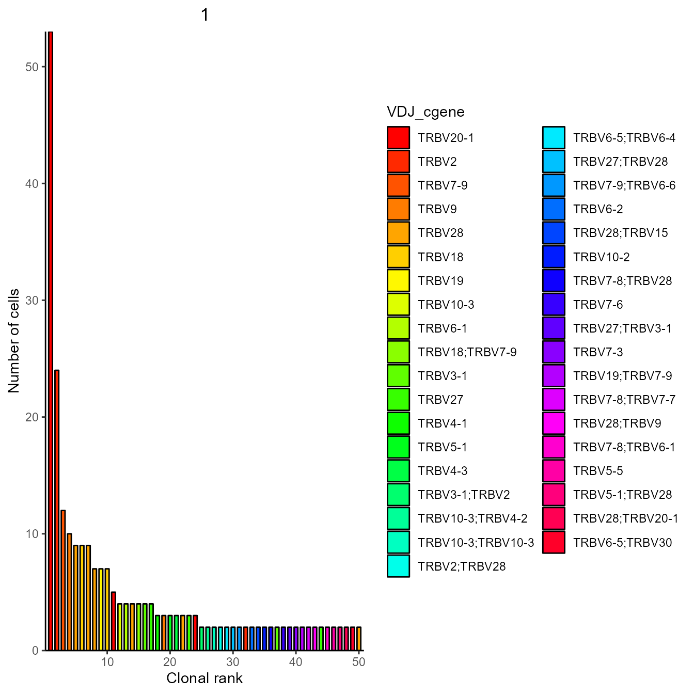

vignettes/airr_compatibility.Rmd
airr_compatibility.RmdThe Adaptive Immune Receptor Repertoire Community (AIRR) is a large collaborative effort to estabilish community standards and tools for AIRR-seq (VDJ in Platypus) generation, analyzing and sharing. An example of sharing are several databases for AIRR-seq such as link iReceptor and link VDJBase. All these repositories use a standard format for AIRR data. Recently 10x’s Cellranger was also updated to output AIRR_rearrangements.tsv, a file complying with this standard format.
Notably, the format has a key limitation for single-cell application, as it allows for a single productive rearrangement per table row (i.e. one receptor chain contig). Every single cell in e.g. a 10x dataset is therefore described by 1 or more rows, depening on the number of recovered contigs. On contrary, the Platypus VGM format puts each cell in a single line and doubles columns identified by either “VDJ_…” for beta or heavy chains or “VJ_…” for alpha or light chains.
To allow interoperability between AIRR standards and Platypus, two compatbility functions are available: 1. PlatypusDB_VGM_to_AIRR() 2. PlatypusDB_AIRR_to_VGM()
Here we show the capabilities of these by use cases.
library(Platypus)For showcasing, we download data from T cells in the CNS of aged mice. Analysis of this dataset is showcased in the Platypus Quickstart vignette.
#downloading raw VDJ data
yermanos2021a_raw <- PlatypusDB_fetch(PlatypusDB.links = c("yermanos2021a/ALL/VDJ"),load.to.list = T, load.to.enviroment = F)
#Cellranger AIRR compatible output can be found here:
names(yermanos2021a_raw[[1]][[1]][[6]])## [1] "cell_id" "clone_id" "sequence_id"
## [4] "sequence" "sequence_aa" "productive"
## [7] "rev_comp" "v_call" "v_cigar"
## [10] "d_call" "d_cigar" "j_call"
## [13] "j_cigar" "c_call" "c_cigar"
## [16] "sequence_alignment" "germline_alignment" "junction"
## [19] "junction_aa" "junction_length" "junction_aa_length"
## [22] "v_sequence_start" "v_sequence_end" "d_sequence_start"
## [25] "d_sequence_end" "j_sequence_start" "j_sequence_end"
## [28] "c_sequence_start" "c_sequence_end" "consensus_count"
## [31] "duplicate_count" "is_cell"Another way to get these file outside of R is to download RAW VDJ .zip files from PlatypusDB. Check these for all datasets here.
For this the PlatypusDB_AIRR_to_VGM function is provided. It returns AIRR compatibile tables by enriching and aggregating airr_rearrangements.tsv files from cellranger and an input VGM
As the Platypus VGM does not store alignment CIGAR strings, the Cellranger output airr_rearrangements is neccessary to fill these columns in the final dataframe.
! Additional columns: While the AIRR standards specify the minimal required columns, there is no limit to extending this format. The VGM_to_AIRR function thereby also exports all other columns including additional clonotyping, groupings and most importantly any present GEX metadata.
#Downloading a VGM
PlatypusDB_fetch(PlatypusDB.links = c("yermanos2021a//ALL"),load.to.enviroment = T) ## 2022-04-02 10:08:08: Starting download of yermanos2021a__VDJmatrix.RData...## 2022-04-02 10:08:08: Starting download of yermanos2021a__GEXmatrix.RData...## [1] "yermanos2021a__VDJGEXmatrix"
#Return basic AIRR table
AIRR_out <- PlatypusDB_VGM_to_AIRR(yermanos2021a__VDJGEXmatrix,
airr.rearrangements = yermanos2021a_raw, airr.integrate = T)## Order of samples in VGM is (Barcode prefix: entry in sample_id column): s1: s1 / s2: s2 / s3: s3 / s4: s4
#export
utils::write.table(AIRR_out, "yermanos2021a_AIRR_integrated.tsv")This is the case when working on a local dataset. The VGM_to_AIRR function takes file paths to airr_rearrangement.tsv files in cellranger output directories
#Return basic AIRR table
AIRR_out <- PlatypusDB_VGM_to_AIRR(yermanos2021a__VDJGEXmatrix,
airr.rearrangements = list(
"C:/Users/PlatypusDB/yermanos2021a__VDJ_RAW/Aged.CNS.pool.3m.Tcell.S1/airr_rearrangement.tsv",
"C:/Users/PlatypusDB/yermanos2021a__VDJ_RAW/Aged.CNS.pool.12m.Tcell.S2/airr_rearrangement.tsv",
"C:/Users/PlatypusDB/yermanos2021a__VDJ_RAW/Aged.CNS.pool.18m.Tcell.S3/airr_rearrangement.tsv",
"C:/Users/PlatypusDB/yermanos2021a__VDJ_RAW/Aged.CNS.single.18m.Tcell.S4/airr_rearrangement.tsv"),
airr.integrate = T)## Order of samples in VGM is (Barcode prefix: entry in sample_id column): s1: s1 / s2: s2 / s3: s3 / s4: s4
#export
utils::write.table(AIRR_out, "yermanos2021a_AIRR_integrated.tsv")VDJ and GEX.features.to.append default to “none”. They accept character vectors of column names to append to the AIRR output and, in case of GEX.features.to.append, also Gene names, which are passed onto Seurat::FetchData() In the example below, we set both to “all”
#Return basic AIRR table
AIRR_out <- PlatypusDB_VGM_to_AIRR(yermanos2021a__VDJGEXmatrix,
airr.rearrangements = yermanos2021a_raw,
airr.integrate = T,
VDJ.features.to.append = "all",
GEX.features.to.append = "all")## Order of samples in VGM is (Barcode prefix: entry in sample_id column): s1: s1 / s2: s2 / s3: s3 / s4: s4
names(AIRR_out)## [1] "barcode" "cell_id" "clone_id"
## [4] "sequence_id" "sequence" "sequence_aa"
## [7] "productive" "rev_comp" "v_call"
## [10] "v_cigar" "d_call" "d_cigar"
## [13] "j_call" "j_cigar" "c_call"
## [16] "c_cigar" "sequence_alignment" "germline_alignment"
## [19] "junction" "junction_aa" "junction_length"
## [22] "junction_aa_length" "v_sequence_start" "v_sequence_end"
## [25] "d_sequence_start" "d_sequence_end" "j_sequence_start"
## [28] "j_sequence_end" "c_sequence_start" "c_sequence_end"
## [31] "consensus_count" "duplicate_count" "is_cell"
## [34] "sample_id" "celltype" "VDJ_chain_contig"
## [37] "VJ_chain_contig" "orig_barcode" "FB_assignment"
## [40] "group_id" "clonotype_id_10x" "celltype.1"
## [43] "clonotype_frequency" "specifity" "affinity"
## [46] "GEX_available" "orig.ident" "orig_barcode_GEX"
## [49] "seurat_clusters" "PC_1" "PC_2"
## [52] "UMAP_1" "UMAP_2" "tSNE_1"
## [55] "tSNE_2" "batch_id" "clonotype_id"
## [58] "nCount_RNA" "nFeature_RNA" "percent.mt"
## [61] "RNA_snn_res.0.5"GEX and VDJ columns have been added to the AIRR output. Given the AIRR data structure entries on a cell level are duplicated in two rows (if that cell contained 2 V(D)J chains).
To give an example:
VGM FORMAT| barcode | VDJ_chain_contig | VJ_chain_contig | seurat_clusters |
|---|---|---|---|
| Cell-1 | Contig-1 | Contig-4 | 2 |
| Cell-2 | Contig-2 | Contig-5 | 1 |
| Cell-3 | Contig-3 | Contig-6 | 5 |
| barcode | sequence_id | seurat_clusters |
|---|---|---|
| Cell-1 | Contig-1 | 2 |
| Cell-2 | Contig-2 | 1 |
| Cell-3 | Contig-3 | 5 |
| Cell-1 | Contig-4 | 2 |
| Cell-2 | Contig-5 | 1 |
| Cell-3 | Contig-6 | 5 |
#Return basic AIRR table
AIRR_out <- PlatypusDB_VGM_to_AIRR(yermanos2021a__VDJGEXmatrix,
airr.rearrangements = yermanos2021a_raw,
airr.integrate = T,
GEX.features.to.append = c("CD3E","CD8A"))## Order of samples in VGM is (Barcode prefix: entry in sample_id column): s1: s1 / s2: s2 / s3: s3 / s4: s4
names(AIRR_out)## [1] "barcode" "cell_id" "clone_id"
## [4] "sequence_id" "sequence" "sequence_aa"
## [7] "productive" "rev_comp" "v_call"
## [10] "v_cigar" "d_call" "d_cigar"
## [13] "j_call" "j_cigar" "c_call"
## [16] "c_cigar" "sequence_alignment" "germline_alignment"
## [19] "junction" "junction_aa" "junction_length"
## [22] "junction_aa_length" "v_sequence_start" "v_sequence_end"
## [25] "d_sequence_start" "d_sequence_end" "j_sequence_start"
## [28] "j_sequence_end" "c_sequence_start" "c_sequence_end"
## [31] "consensus_count" "duplicate_count" "is_cell"
## [34] "sample_id" "celltype" "VDJ_chain_contig"
## [37] "VJ_chain_contig" "CD3E" "CD8A"For demo purposes we use a small TRB dataset from a study of human immune repertoires during COVID-19 infection. (Wen W, Su W, Tang H et al. Cell Discovery 2020)
Data of Study ID PRCJCA002413 and Sample ID “ERS3” and “ERS5” were downloaded from IReceptor
The function AIRR_to_VGM offers some parameters of the VDJ_GEX_matrix, including the re-alignment and trimming of receptor sequences
Wen2020_VGM <- PlatypusDB_AIRR_to_VGM(AIRR.input = list("C:/Users/PlatypusDB/wen2020/ERS3/airr-covid-19.tsv",
"C:/Users/PlatypusDB/wen2020/ERS5/airr-covid-19.tsv"),
VDJ.combine = T,
verbose = T,
filter.overlapping.barcodes.VDJ = T,
trim.and.align = T)##
## Loading in data [1] "2022-04-02 10:08:54 CEST"
##
## Local paths input detected. Loading in tables
## TRUST4 input format detected for sample 1. Appending extra columns for complete_vdj and consensus_count to output VGM
## TRUST4 input format detected for sample 2. Appending extra columns for complete_vdj and consensus_count to output VGM
## AIRR tables loaded [1] "2022-04-02 10:08:55 CEST"
##
## Got VDJ stats [1] "2022-04-02 10:08:55 CEST"
##
## For sample 1: 1106 cell assigned barcodes in VDJ
## For sample 2: 1046 cell assigned barcodes in VDJ
## Removed a total of 2 cells with non unique barcodes
## Starting VDJ barcode iteration 1 of 2... [1] "2022-04-02 10:08:55 CEST"
##
## Filtered out 0 cells with 0 chains
## Done with 1 of 2 [1] "2022-04-02 10:09:00 CEST"
##
## Starting VDJ barcode iteration 2 of 2... [1] "2022-04-02 10:09:00 CEST"
##
## Filtered out 0 cells with 0 chains
## Done with 2 of 2 [1] "2022-04-02 10:09:04 CEST"
##
## Done [1] "2022-04-02 10:09:04 CEST"This VGM can now be used by Platypus functions:
Wen2020_VGM[[1]] <- VDJ_clonotype_v3(Wen2020_VGM[[1]],
clone.strategy = "cdr3.aa",
global.clonotype = F,
hierarchical = "none",
VDJ.VJ.1chain = F)## Clonotyping strategy: cdr3.aa## Processing sample 1 of 2## Processing sample 2 of 2## Backing up 10x default clonotyping in columns clonotype_id_10x and clonotype_frequency_10x before updating clonotype_id and clonotype_frequency columns
#Setting hierarchical to "none" as this dataset does not contain paired VDJ and VJ sequences (bulk AIRR-seq) and not filtering out cells with less than 2 chains
#One sample contains only TRB, the other only TRA sequences. For plotting we choose only sample 1 with TRBs
expansion_plot <- VDJ_clonal_expansion(subset(Wen2020_VGM[[1]], sample_id == "s1"),
group.by = "none",
color.by = "VDJ_cgene")
expansion_plot[[1]]## [[1]] ## 5. Conclusion
With more and more tools using the AIRR data commons and standards, we aim to keep the compatibility of the Platypus package and database as easy as possible. This will open doors for data integration from various sources as well as the usage of Platypus on datasets not processed by Cellranger
## R version 4.0.5 (2021-03-31)
## Platform: x86_64-w64-mingw32/x64 (64-bit)
## Running under: Windows 10 x64 (build 19044)
##
## Matrix products: default
##
## locale:
## [1] LC_COLLATE=German_Germany.1252 LC_CTYPE=German_Germany.1252
## [3] LC_MONETARY=German_Germany.1252 LC_NUMERIC=C
## [5] LC_TIME=German_Germany.1252
##
## attached base packages:
## [1] stats graphics grDevices utils datasets methods base
##
## other attached packages:
## [1] Platypus_3.3.3 SeuratObject_4.0.4 Seurat_4.1.0 forcats_0.5.1
## [5] stringr_1.4.0 purrr_0.3.4 readr_2.1.2 tidyr_1.1.3
## [9] tibble_3.1.2 ggplot2_3.3.5 tidyverse_1.3.1 dplyr_1.0.7
##
## loaded via a namespace (and not attached):
## [1] readxl_1.3.1 backports_1.4.1 systemfonts_1.0.4
## [4] plyr_1.8.6 igraph_1.2.6 lazyeval_0.2.2
## [7] splines_4.0.5 listenv_0.8.0 scattermore_0.7
## [10] digest_0.6.27 htmltools_0.5.2 fansi_0.5.0
## [13] magrittr_2.0.1 memoise_2.0.1 tensor_1.5
## [16] cluster_2.1.2 ROCR_1.0-11 tzdb_0.2.0
## [19] globals_0.14.0 modelr_0.1.8 matrixStats_0.59.0
## [22] pkgdown_2.0.2 spatstat.sparse_2.0-0 colorspace_2.0-2
## [25] rvest_1.0.2 ggrepel_0.9.1 textshaping_0.3.6
## [28] haven_2.4.3 xfun_0.27 crayon_1.5.0
## [31] jsonlite_1.7.2 spatstat.data_2.1-2 survival_3.2-11
## [34] zoo_1.8-9 glue_1.4.2 polyclip_1.10-0
## [37] gtable_0.3.0 leiden_0.3.9 future.apply_1.8.1
## [40] abind_1.4-5 scales_1.1.1 DBI_1.1.2
## [43] miniUI_0.1.1.1 Rcpp_1.0.7 viridisLite_0.4.0
## [46] xtable_1.8-4 reticulate_1.20 spatstat.core_2.2-0
## [49] htmlwidgets_1.5.4 httr_1.4.2 RColorBrewer_1.1-2
## [52] ellipsis_0.3.2 ica_1.0-2 farver_2.1.0
## [55] pkgconfig_2.0.3 uwot_0.1.10 sass_0.4.0
## [58] dbplyr_2.1.1 deldir_0.2-10 utf8_1.2.1
## [61] labeling_0.4.2 tidyselect_1.1.1 rlang_0.4.10
## [64] reshape2_1.4.4 later_1.2.0 munsell_0.5.0
## [67] cellranger_1.1.0 tools_4.0.5 cachem_1.0.6
## [70] cli_3.1.1 generics_0.1.2 broom_0.7.12
## [73] ggridges_0.5.3 evaluate_0.14 fastmap_1.1.0
## [76] yaml_2.2.1 ragg_1.2.1 goftest_1.2-2
## [79] knitr_1.37 fs_1.5.2 fitdistrplus_1.1-6
## [82] RANN_2.6.1 pbapply_1.5-0 future_1.23.0
## [85] nlme_3.1-152 mime_0.11 xml2_1.3.3
## [88] compiler_4.0.5 rstudioapi_0.13 plotly_4.10.0
## [91] png_0.1-7 spatstat.utils_2.2-0 reprex_2.0.1
## [94] bslib_0.3.1 stringi_1.7.4 highr_0.9
## [97] desc_1.4.0 lattice_0.20-44 Matrix_1.3-4
## [100] vctrs_0.3.8 pillar_1.7.0 lifecycle_1.0.1
## [103] spatstat.geom_2.2-0 lmtest_0.9-38 jquerylib_0.1.4
## [106] RcppAnnoy_0.0.18 data.table_1.14.0 cowplot_1.1.1
## [109] irlba_2.3.3 httpuv_1.6.1 patchwork_1.1.1
## [112] R6_2.5.1 promises_1.2.0.1 KernSmooth_2.23-20
## [115] gridExtra_2.3 parallelly_1.30.0 codetools_0.2-18
## [118] MASS_7.3-54 assertthat_0.2.1 rprojroot_2.0.2
## [121] withr_2.4.3 sctransform_0.3.3 mgcv_1.8-36
## [124] parallel_4.0.5 hms_1.1.1 grid_4.0.5
## [127] rpart_4.1-15 rmarkdown_2.11 Rtsne_0.15
## [130] shiny_1.7.1 lubridate_1.8.0